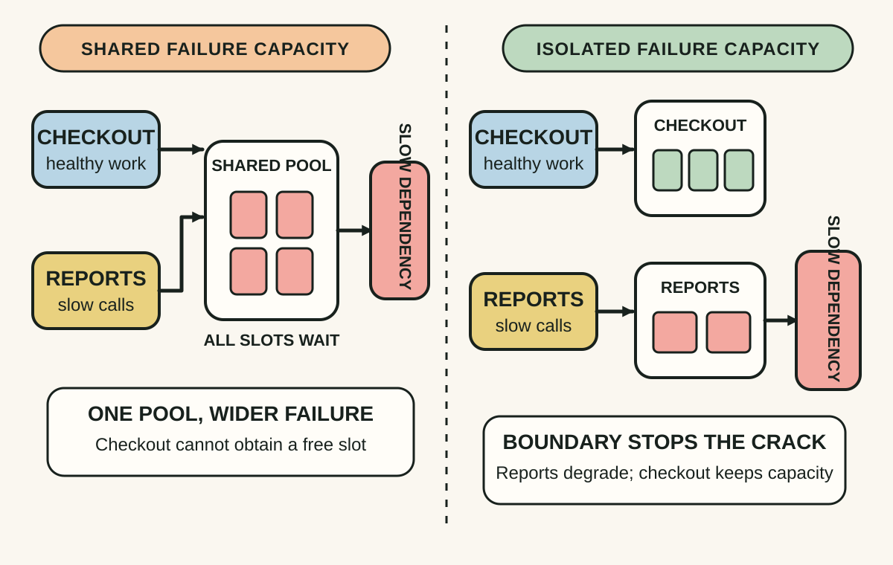
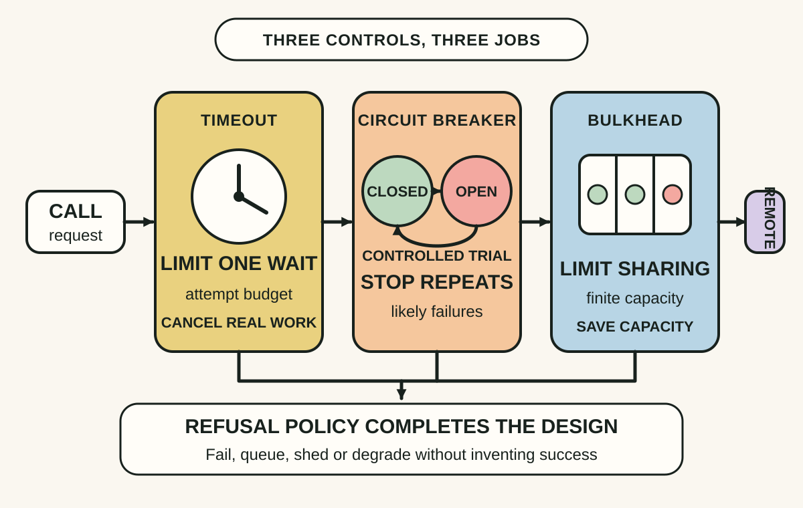
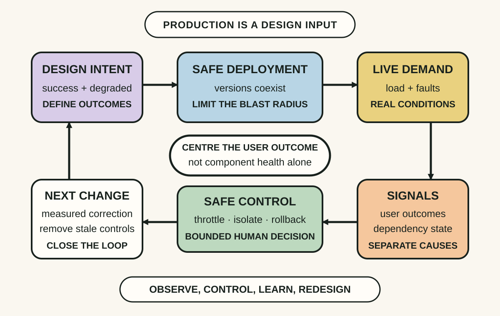

Daily lesson ·
Release It!
Keep a local fault from becoming a system-wide outage by making integration risks visible, combining stability patterns deliberately and treating production behaviour as part of the design.
Idea 1
Stop cracks at integration boundaries #
The idea
Nygard argues that production failures often spread through integration points. A remote call can be slow, fail partially or leave its outcome uncertain. While callers wait, they hold threads, connections, memory or queue capacity; enough waiting work can exhaust the caller and carry the failure into otherwise healthy parts of the system.
The useful unit of analysis is therefore not only the component that first breaks, but the chain that can amplify the fault. Stable systems make dependencies and finite resources explicit, then arrange for a failing or overloaded component to be cut off before it consumes every caller that depends on it.

Why it matters
Teams that inspect only the failing dependency may restart it without removing the amplification path. Seeing held resources, retries and shared pools exposes how a partial failure can become a cascade and where a boundary can protect useful work.
Apply it today
Choose one outbound database, HTTP, queue or file-system call on a user-critical path.
Write what the caller holds while waiting, the maximum useful wait and what other work shares those resources.
Name the smallest boundary that could stop this dependency from exhausting unrelated work.
Caveat or failure mode
Isolation can move pressure rather than remove it. Rejecting work, filling a queue or serving stale data still has a user and operational cost. Trace displaced load and make the degraded outcome explicit instead of labelling every fast failure resilient.
Idea 2
Give each stability pattern one job #
The idea
Nygard presents stability patterns as a set of cooperating controls rather than one magic wrapper. A timeout limits how long an attempt may consume resources. A circuit breaker stops sending calls that are likely to fail and later allows controlled probes. A bulkhead partitions capacity so one damaged dependency or workload cannot consume everything.
The patterns answer different questions: how long will this attempt wait, when should repeated attempts stop and which work is allowed to share failure capacity? Combining them around an explicit failure policy can reduce propagation while preserving a route to recovery.

Why it matters
Treating all failures as retries or all resilience as a circuit breaker leaves gaps. A breaker without a useful fallback only changes the error's speed; a timeout without isolation can still let many simultaneous waits consume the pool; a bulkhead without signals can fail silently.
Apply it today
For the dependency from Idea 1, write the useful deadline for one attempt and how cancellation reaches the underlying work.
Define which outcomes count toward opening a breaker, when a trial request is safe and which signal records every state change.
Allocate a pool, concurrency limit or queue boundary that preserves capacity for unrelated work.
Caveat or failure mode
Thresholds copied from a library default can oscillate, reject healthy work or hide a slow recovery. Fallbacks can return unsafe or stale answers. Tune from service objectives and observed distributions, test the open and recovery paths, and distinguish business rejection from technical failure.
Idea 3
Make production behaviour part of the design #
The idea
Release It! widens software design beyond functional code. A production-ready system must reveal what it is doing, accept controlled configuration, survive version overlap and deployment, and provide operators with signals and controls before the first serious incident.
Nygard's second edition moves from processes and networks through interconnects and the control plane, then into deployment and systemic adaptation. The recurring point is that production is not a final environment where finished code is placed; its topology, demand, operations and feedback are design inputs.

Why it matters
A feature can pass its functional tests and still be impossible to diagnose, throttle, roll back or run beside an older version. Designing the operational feedback path early turns an outage from blind improvisation into a bounded decision with evidence.
Apply it today
Choose one feature approaching release and name the user-visible success signal plus one early warning of degradation.
Write the safest live control available to an operator, such as a rate limit, feature switch, breaker or rollback, including who may use it.
State how old and new versions coexist during deployment and what a user receives if the dependency path is unavailable.
Caveat or failure mode
More dashboards, flags and controls can create their own complexity, privilege risks and stale configuration. Prefer a small tested control surface tied to real decisions, assign ownership and remove temporary mechanisms after they stop earning their cost.
Knowledge check · 6 questions
Learning check
Answer all 6, then check your answers. Your first result stays in this browser, and each explanation appears after you check. A 3-question review can appear on the homepage from tomorrow.
6 questions not yet answered.
Today's experiment · 10 minutes
Write one dependency isolation contract
- Pick one remote dependency on a user-critical path and draw the caller, its finite resource pool and the supplier.
- Write the useful attempt deadline, the breaker condition and the bulkhead or concurrency boundary beside the connection.
- Add the exact degraded user outcome and one signal for waiting, breaker state or rejected work.
- Circle the assumption you have not measured and name the smallest failure test that could check it.
Observable result: You finish with a one-page dependency contract that shows the failure path, three distinct controls, the user-visible degraded outcome and one assumption to test.
Retrieval practice
Spaced recall
- From Site Reliability Engineering: what decision does an error budget make possible when reliability is within its objective?
- From Designing Data-Intensive Applications: after a remote timeout, which outcomes remain possible from the caller's point of view?
- From Thinking in Systems: how could a reinforcing loop turn a small latency increase into a larger capacity problem?
Verification
Source notes
These links support the attributed claims and edition details; applications and extensions are labelled in the lesson.
One-sentence takeaway